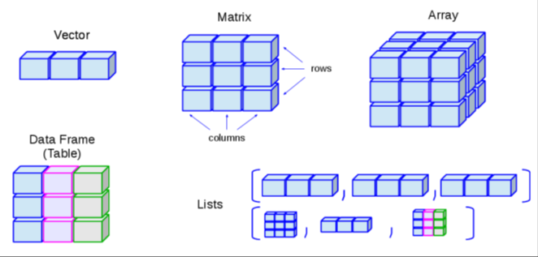
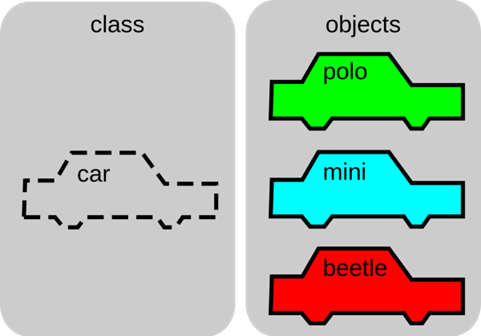
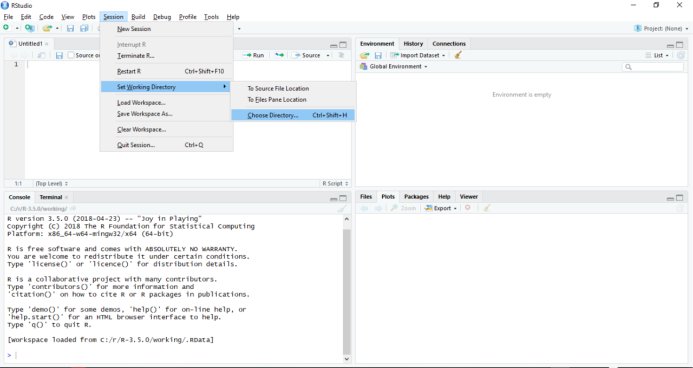

{kind=link}
x <- 4
x[1] 4y = 5
x + y[1] 9O foi criado por Ross Ihaka e Robert Gentleman no departamento de Estatística da Universidade de Auckland, Nova Zelândia, mas foi posteriormente desenvolvido por um esforço colaborativo de pessoas em vários locais do mundo.
É uma linguagem e um ambiente de desenvolvimento integrado para cálculos estatísticos, gráficos e análises diversas.
É gratuito e de livre distribuição.
É altamente expansível com o uso de pacotes, que são bibliotecas para funções específicas ou áreas de estudo específicas.
Curva de aprendizagem bastante amigável.
Enorme quantidade de tutoriais disponíveis.
Programação orientada a objetos.
Tudo no são objetos.
Objetos possuem uma estrutura de dados que armazenam variáveis.
Variáveis armazenam valores ou conjunto de valores de acordo com o tipo dos dados
As variáveis populam estruturas de dados.
As variáveis são armazenadas em tipos de estruturas de dados:

As váriáveis pode ser de diferentes tipos:
numeric
character
logical
factor
variáveis categóricas
nº limitado de valores
níveis do fator

| Classe S3 | Classe S4 |
|---|---|
Atributos são acessados usando $ |
Atributos são acessados usando @ |
Tudo após # não é lido pelo R. Este é um caractere de comentário.
O diferencia maiúsculas de minúsculas.
Há uma série de operadores pré-programados.
O console do refere-se ao ambiente de desenvolvimento e o prompt de comando (command prompt) é a linha de inserção de comando. O símbolo no prompt de comando é o “>”, porém ele também muda para “+” quando há a entrada de um comando incompleto. Com o sinal de +, o console indica que aguarda a completude do comando inserido.
Tudo após o símbolo “#” não é lido pelo R. Esse é o caráter para introdução de notas e comentários.
Para atribuir um valor a um objeto, utilize o operador <- (ou =):
x <- 4
x[1] 4y = 5
x + y[1] 9função()
função(argumento1 = valor, argumento2 = valor, ...)
Vamos criar uma função como exemplo:
função <- function(arg1 = "", arg2 = ""){
Código_da_função
}Vamos observar os argumentos da função com a função args()
args(função) # Mostra os argumentos da função `função`function (arg1 = "", arg2 = "")
NULLVersão, licença e citação:
R.Version() # mostra a versão$platform
[1] "x86_64-w64-mingw32"
$arch
[1] "x86_64"
$os
[1] "mingw32"
$crt
[1] "ucrt"
$system
[1] "x86_64, mingw32"
$status
[1] ""
$major
[1] "4"
$minor
[1] "2.2"
$year
[1] "2022"
$month
[1] "10"
$day
[1] "31"
$`svn rev`
[1] "83211"
$language
[1] "R"
$version.string
[1] "R version 4.2.2 (2022-10-31 ucrt)"
$nickname
[1] "Innocent and Trusting"license() # informações sobre a licença
This software is distributed under the terms of the GNU General
Public License, either Version 2, June 1991 or Version 3, June 2007.
The terms of version 2 of the license are in a file called COPYING
which you should have received with
this software and which can be displayed by RShowDoc("COPYING").
Version 3 of the license can be displayed by RShowDoc("GPL-3").
Copies of both versions 2 and 3 of the license can be found
at https://www.R-project.org/Licenses/.
A small number of files (the API header files listed in
R_DOC_DIR/COPYRIGHTS) are distributed under the
LESSER GNU GENERAL PUBLIC LICENSE, version 2.1 or later.
This can be displayed by RShowDoc("LGPL-2.1"),
or obtained at the URI given.
Version 3 of the license can be displayed by RShowDoc("LGPL-3").
'Share and Enjoy.'citation() # como citar
To cite R in publications use:
R Core Team (2022). R: A language and environment for statistical
computing. R Foundation for Statistical Computing, Vienna, Austria.
URL https://www.R-project.org/.
A BibTeX entry for LaTeX users is
@Manual{,
title = {R: A Language and Environment for Statistical Computing},
author = {{R Core Team}},
organization = {R Foundation for Statistical Computing},
address = {Vienna, Austria},
year = {2022},
url = {https://www.R-project.org/},
}
We have invested a lot of time and effort in creating R, please cite it
when using it for data analysis. See also 'citation("pkgname")' for
citing R packages.Funções de ajuda:
help() # função ajudastarting httpd help server ... donehelp.start() # Manuais e outros materiaisIf nothing happens, you should open
'http://127.0.0.1:30808/doc/html/index.html' yourselfhelp(base) # Manual do pacote "base"Funções de data e hora:
Sys.time() # Obtém data e horário exatos do sistema[1] "2025-04-27 11:27:27 -03"Pacotes mais baixados:
Warning: package 'xaringanExtra' was built under R version 4.2.3Pacotes mais baixados em tempo real:
x <- 4 # cria o objeto "x" atribuindo o valor "4"
x # Observe o objeto criado[1] 4Para concatenar vários valores utilize a função c:
Concatenar vários valores e atribuí-los a um objeto:
x <- c(4, 5, 6, 7, 8)
x # Observe o objeto criado[1] 4 5 6 7 8Extrair um ou vários valores de um objeto a partir da indexação:
x[3][1] 6x[c(1, 4)][1] 4 7Substitua valores de um objeto a partir da indexação:
y <- c(24, 10, 45, 56, 20, 29, 50, 67, 80, 23, 20, 15, 65, 57, 34, 63, 20)
y[y==20] <- 10 # Se algum valor de y é igual a 20, substituir por 10
y [1] 24 10 45 56 10 29 50 67 80 23 10 15 65 57 34 63 10y[y==10] <- "NA" # Apaga todos os valores iguais a 10, substituindo por "NA"
y [1] "24" "NA" "45" "56" "NA" "29" "50" "67" "80" "23" "NA" "15" "65" "57" "34"
[16] "63" "NA"Deleta o objeto:
rm(x)Pode-se criar objetos com valores numéricos (numeric), conforme mostrado até aqui, mas também objetos com valores de caracteres (character), lógicos (logical) ou fatores (factor).
Objetos do tipo character podem ser criados utilizando aspas (” “) entre os valores incluídos. Um objeto do tipo factor cria categorias para cada valor encontrado no objeto. Geralmente são usados em diversos pacotes para análises filogenéticas:
character <-c("apical", "apical", "basal", "apical", "apical", "basal", "median")
character[1] "apical" "apical" "basal" "apical" "apical" "basal" "median"charact_fact <- factor(character)
charact_fact[1] apical apical basal apical apical basal median
Levels: apical basal median| < | | less than | |
|---|---|
| <= | | less than or equal to | |
| > | | greater than | |
|---|---|
| >= | | greater than or equal to | |
| == | | exactly equal to | |
|---|---|
| != | | not equal to | |
| !x | | not x | |
|---|---|
| x | | y | x OR y | |
Vamos testar:
x <- c(1:10)
x [1] 1 2 3 4 5 6 7 8 9 10x[(x>8) | (x<5)][1] 1 2 3 4 9 10# Qual a lógica?
x > 8 [1] FALSE FALSE FALSE FALSE FALSE FALSE FALSE FALSE TRUE TRUEx < 5 [1] TRUE TRUE TRUE TRUE FALSE FALSE FALSE FALSE FALSE FALSEx > 8 | x < 5 [1] TRUE TRUE TRUE TRUE FALSE FALSE FALSE FALSE TRUE TRUEx[c(T, T, T, T, F, F, F, F, T, T)][1] 1 2 3 4 9 10Experimente a utilização dos operadores matemáticos simples entre diferentes objetos:
x [1] 1 2 3 4 5 6 7 8 9 10y [1] "24" "NA" "45" "56" "NA" "29" "50" "67" "80" "23" "NA" "15" "65" "57" "34"
[16] "63" "NA"object.size(x) # Tamanho do objeto96 bytesstr(x) # Estrutura do objeto int [1:10] 1 2 3 4 5 6 7 8 9 10length(x) # Comprimento[1] 10attributes(x) # Nomes, classes, etcNULLclass(x) # Tipo do objeto[1] "integer"mode(x) # Modo usado pelo R para armazenar objeto na memória[1] "numeric"typeof(x) # Tipo usado pelo R para armazenar objeto na memória[1] "integer"Inspecione os objetos criados. Exemplos:
class(x)[1] "integer"class(y)[1] "character"class(character)[1] "character"class(charact_fact)[1] "factor"Com os métodos da função is é possível testar se um objeto corresponde a uma determinada classe. E com os métodos da função as é possível coagir um objeto de uma classe a transformar-se em outra.
Veja os métodos das funções is e as: (Retire o operador # da frente do comando para rodá-lo)
methods(is)Warning in .S3methods(generic.function, class, envir): function 'is' appears
not to be S3 generic; found functions that look like S3 methods [1] is.array is.atomic is.call
[4] is.character is.complex is.data.frame
[7] is.double is.element is.empty.model
[10] is.environment is.expression is.factor
[13] is.finite is.function is.hashtab
[16] is.infinite is.integer is.language
[19] is.leaf is.list is.loaded
[22] is.logical is.matrix is.mts
[25] is.na is.na.data.frame is.na.numeric_version
[28] is.na.POSIXlt is.na<- is.na<-.default
[31] is.na<-.factor is.na<-.numeric_version is.name
[34] is.nan is.null is.numeric
[37] is.numeric.Date is.numeric.difftime is.numeric.POSIXt
[40] is.numeric_version is.object is.ordered
[43] is.package_version is.pairlist is.primitive
[46] is.qr is.R is.raster
[49] is.raw is.recursive is.relistable
[52] is.single is.stepfun is.symbol
[55] is.table is.ts is.tskernel
[58] is.unsorted is.vector
see '?methods' for accessing help and source code# methods(as)Teste com os objetos já criados:
O RStudio é um Ambiente Interativo de Desenvolvimento (IDE) que traz o console R, um editor de script, a exibição dos objetos e funções do ambiente de trabalho, área de plotagem, entre outras funcionalidades e automatizações, dentre as quais:
Identação automática
Complementação de parênteses
Editor com destaque de sintaxe
Auto-completar comandos

O ambiente de trabalho (workspace) é o espaço virtual onde os objetos definidos pelo usuário (vetores, matrizes, dataframes, listas, funções) são alocados.
No RStudio, podemos observar o ambiente de trabalho e seus objetos na aba Ènvironment.
O diretório de trabalho (working directory) define o diretório-raiz do caminho de diretórios para fins de entrada e saída de arquivos. Ele define o caminho relativo para um caminho de diretórios.
O caminho absoluto tem início na pasta raiz do seu disco local do computador. O caminho absoluto do ambiente de trabalho (workspace) pode ser obtido com a função getwd(). Abaixo vemos o diretório-raiz do presente bookdown no computador local:
getwd()[1] "D:/gitRepositories/Introducao-a-Filoinformatica"
ls() # lista todos os objetos/funções do Ambiente de Trabalho[1] "charact_fact" "character" "função" "pandoc_dir"
[5] "quarto_bin_path" "x" "y" rm(list = ls()) # limpa todo Ambiente de Trabalho
ls() # lista todos os objetos/funções do Ambiente de Trabalhocharacter(0)